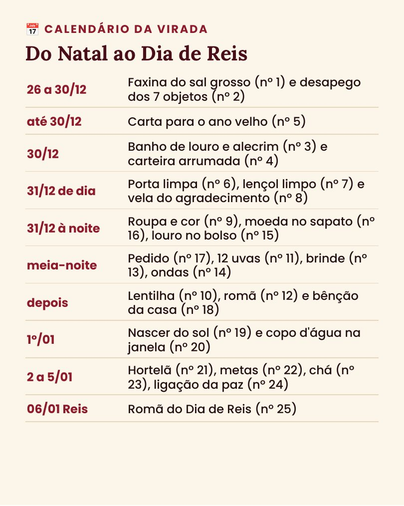
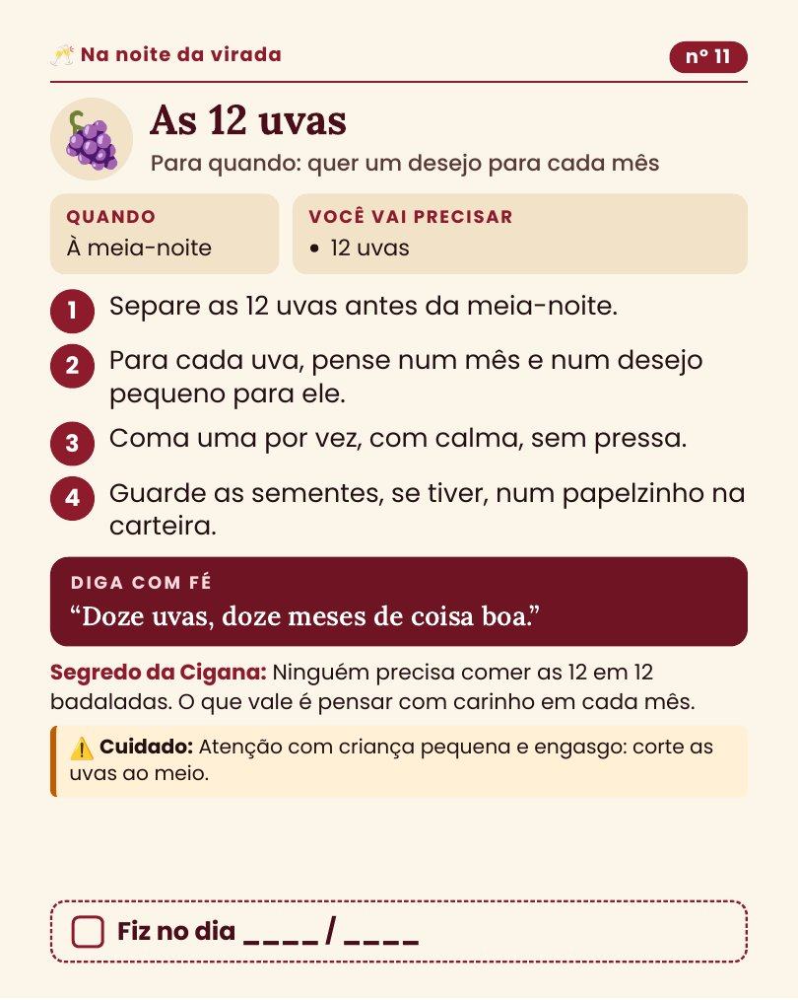

25 simpatias para fechar 2026 com leveza e abrir 2027 com fartura, paz e saúde. Do Natal ao Dia de Reis, com letra grande.
Quero meu Caderninho da ViradaR$ 9,99 · acesso na hora pelo celular🔒 Pagamento seguro pela Kiwify · Pix ou cartão


Páginas de verdade do caderninho: quando fazer, o que precisa, o passo a passo e a frase para dizer com fé.
Querida, eu aprendi com as mais velhas que a virada se prepara: a gente limpa a casa, solta o que pesa, escolhe um pedido e firma ele nos primeiros dias do ano. Não precisa fazer todas: escolha de 3 a 5 e faça com calma.
Com carinho,
Cigana Carmesim
O Caderninho da Virada 2027
R$ 9,99
Leve os dois caderninhos por R$ 14,99: no pagamento, marque a caixinha do Caderninho da Cigana (101 simpatias).
Pagamento único · Pix ou cartão · você recebe o acesso por e-mail na hora
👇 Quero meu Caderninho da Virada7 dias de garantia. Se não gostar, é só pedir o reembolso pela Kiwify dentro de 7 dias. Sem pergunta e sem complicação.
Logo depois do pagamento, chega um e-mail da Kiwify com o acesso. É só abrir e baixar o PDF no celular ou no computador.
Não. O Caderninho da Cigana tem 101 simpatias para o ano todo. O da Virada tem 25 simpatias só de Ano Novo, do Natal ao Dia de Reis.
Não. Todas dá para fazer em casa. A das sete ondas tem a versão da bacia com água e sal.
Simpatia é um gesto simbólico de fé e de cuidado. Ela não garante resultado e não substitui médico, advogado ou orientação financeira. O ritual acende a luz, mas quem caminha é você.
Pode. A Kiwify aceita Pix e cartão.